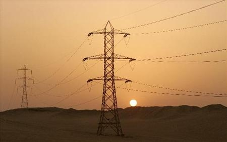
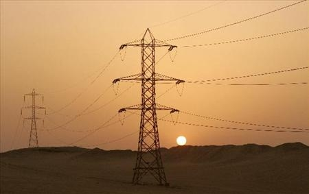

la energia en las casas o en proyectos se separa en circuitos, dos de ellos son los circuitos en serie y en paralelo


La religion es para algunos una forma de vida y por lo tanto se convierte en su energia, toman a sus dioses como centro de su existencia y cambian el sentido de sus vidas respecto a su religion.
Se denomina energía eléctrica a la forma de energía que resulta de la existencia de una diferencia de potencial entre dos puntos, lo que permite establecer una corriente eléctrica entre ambos cuando se los pone en contacto por medio de un conductor eléctrico. ¿ energias renovables?

la energia en las casas o en proyectos se separa en circuitos, dos de ellos son los circuitos en serie y en paralelo
La Energía Espiritual, es conocida bajo muchos nombres: “El Prana de La Vida”, “La Energía de Vida”, “La Luz de La Vida” y pare usted de contar... Esta energía se haya en todos nosotros,y la proyectamos de diferentes maneras pero unos la usamos para el bien y otros para el mal. Esta energía fluye en torno nuestro cuerpo como un río de luz, y da vida a cada uno de los órganos y sistemas de nuestro cuerpo. Esta energía fluye hacia y desde nosotros a través de los chakras o puntos energeticos.
para algunas personas, la energia vital se consigue cuando estas en contacto con algo o alguine que te hace feliz y tiene buena "vibra". como los animales.